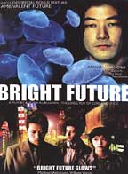
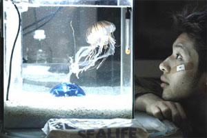

| |
Mo, 23. Oktober 2006
Bright Future (Jap 2003)

"Kiyoshi Kurosawa und die Quallen".
Eine wunderschöne aber
hochgiftige Seewasser-Qualle soll ans Leben im Süßwasser-Aquarium
gewöhnt werden. Aquarien sind wichtige Glücksbringer in ostasiatischen
Wohnungen.
Typische moderne japanische Jugendfilme handeln neben den
großen Träumen und der harten Erziehung immer auch von der typischen
Vereinzelung und den sogenannten "parasitären Singles", die immer noch
bei den Eltern wohnen. Sie wollen sich nicht in die aussichtslose
lebenslange Arbeitsmaschine pressen lassen, und seit kurzem, seit dem
großen wirtschaftlichem Aufschwung führten die geänderten Lebens- und
Arbeitsbedingungen (leichtere Jobwechsel, sinkende Geburtsraten) zu
einer großen Veränderung.
Kiyoshi Kurosawa gilt als der bekannteste und erfolgreichste der jungen japanischen Regie-Superstars. Nach Shinji Ayoama, Hirokaze Koreeda und Shinji Iwai darf bei uns ein Kiyoshi Kurosawa nicht fehlen, obwohl eine umfassende Werkschau vor kurzem im KIZ im Augarten zu sehen war. Seine bekanntesten Filme sind: The Excitement of the Do-Re-Mi-Fa Girl (1985), Cure (1997), Eyes of the Spider (1998), Serpent's Path (1998), Licence to Live (1998), Barren Illusion (1999) and Charisma (1999), Pulse (2001), Doppelganger (2003), und Loft (2005) mit der Ö-Premiere auf der diesjährigen Viennale.
Kiyoshi Kurosawa hat neben einem Stephen Soderberg den interessantesten Genremix zu bieten und ist neben ihm der einzige große Genreregisseur, der sich von Zeit zu Zeit Ausflüge in billige, unkommerzielle Arthouse-Filme erlaubt. Im Westen ist er hauptsächlich bekannt mit intelligenten Horrorschockern, etwa im Stile eines Takashi Miike, mal brutal, mal subtil, immer formal im Klassen besser als alle Kollegen (vor allem die Kamera und die Tonebene), und inhaltlich greift er meist auf existentialistische Grundprobleme zurück. Und dann nimmt er sich alle paar Jahre aus der Genreproduktion heraus und erlaubt sich mal große (Charisma, Licence to Live), mal kleine (Barren Illusion, Bright Future) Meisterwerke und ist damit immer wieder auf alles wichtigen Filmfestivals zu sehen, während seine berühmteren Kassenschlager, wie Pulse oder Kairo durch Hollywood-Remakes auffallen. Das aufälligste Jahr war 1999 als er gleich mit drei verschiedenen Filmen auf den wichtigsten drei Filmfestivals der Welt in den Hauptbewerb eingeladen wurde. Mein Favorit ist davon "Barren Illusion", eine kleine poetische Produktion mit seinen Filmstudenten aus Tokio, und auch sein Freund Shinji Ayoama hat eine kleine Nebenrolle.
Bright Future ist einer seiner kleinsten und positivsten Filme, auf HD-Video gedreht. Darin spielt er sich immer wieder mit den Genre Konventionen. Immer wieder deutet er ernste und konventionelle Themen und Auflösungen nur an, führt sie aber nie zu Ende, gibt dem Zuseher nur eine kleine Andeutung. Erst zum großartig einfachem Schluß in eine "Bright Future" wird die ganze poetische Kraft ausgespielt.
"In a grim Tokyo, a luminous, lethal jellyfish floats in captivity
inside a small tank. It belongs to Mamoru, a twenty-seven-year-old
factory worker, who has decided to force it gradually to mutate into a
freshwater creature. Mamoru shares intense sentiments of anti-social
and unarticulated rage with Yuji, his only friend.
The topics: A contemporary social commentary on disenfranchised Japanese youth.
And Kurosawa's skillful evolution of this "individuality in metamorphosis" theme.
"That the film succeeds on the level of a thriller as well as of a philosophical reflection is a proof of Kurosawa as perhaps the best Japanese filmmaker of his generation." - Matt Bailey, Not Coming to a Theater Near You
 "A cryptic story about generation gaps and murderous jellyfish, Bright Future is Japanese director Kiyoshi Kurosawa's most metaphysical movie. Mamoru (Tadanobu Asano) and Yuji (Joe Odagiri) are two young friends who cope with feelings of alienation in very different ways -- since this is a Kurosawa movie, one of those ways has potentially apocalyptic repercussions. Though admirers of the director's eerie, elegant horror tales Pulse and Cure will find Bright Future rather more lugubrious, Kurosawa's latest turns out to have a surprising emotional pull and a truly transcendent final shot." - Jason Anderson, eye WEEKLY
"The most spellbinding aspect of Bright Future is that the surrealism sustains its own squiddish logic, concluding with one of the most breathtaking film finales of the year." - Lisa Schwarzbaum, Entertainment Weekly
Festivals
Cannes 2003 im Hauptprogramm, Toronto 2003
Akarui mirai, Jap 2003, B+R: Kiyoshi Kurosawa, D: Jô
Odagiri, Tatsuya Fuji, Tadanobu Asano. 92min, jap.meUT
19:30
Uhr, Space04 Kunsthaus Graz, € 5.-
- [imdb] 6.7/10 (526 votes)
- [rottentomatoes]
- [Kritik]
- [Kritik]
- [Kritik]